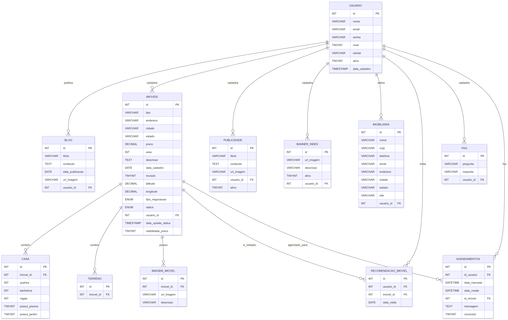
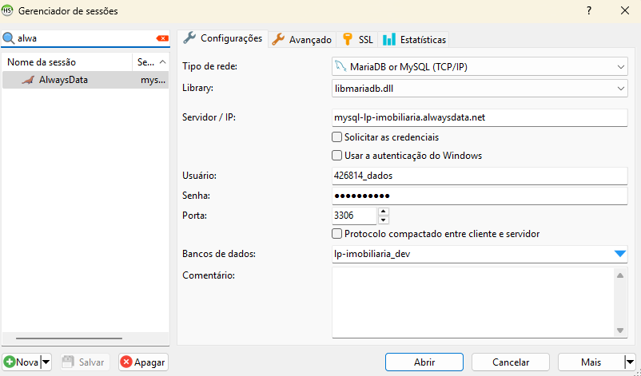
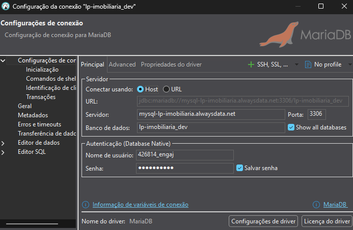
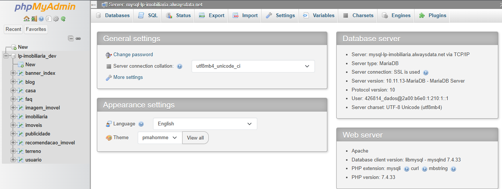

Banco de dados (MySQL)
📝 Recomendações Gerais:
- As estruturas e relações de tabelas deste banco não devem ser alteradas sem a autorização do time de dados.
- No ambiente de desenvolvimento, todos os usuários possuem acesso liberado para inserções e remoções de dados. Caso necessário, esses acessos poderão ser limitados...
- Recomendamos que o desenvolvimento seja iniciado sempre pelo banco local, pois ele oferece maior liberdade para testes e inserções de dados, menor latência nas consultas e a possibilidade de trabalhar com dados inconsistentes ou incompletos sem impacto no ambiente principal ou de desenvolvimento.
Últimas Mudanças
- Banco foi Populado com dados de exemplo!
- Adição do atributo
tipo_negociacaona tabela IMOVEIS - Adição do atributo
ativona tabela BANNER_INDEX - Adição do atributo
ativona tabela PUBLICIDADE - Atualização do atributo
statusna tabela IMOVEIS para aceitar os valoresdisponivel-indisponivel-vendido-locado
- Adição do atributo
data_update_statusna tabela IMOVEIS- Esse atributo é populado por um trigger sempre que o atributo
statusé modificado
- Esse atributo é populado por um trigger sempre que o atributo
Diagrama:

Estrutura:
USUARIO
| Nome da Coluna | Tipo de Dado | Descrição |
|---|---|---|
| id | INT(11) | Identificador único do usuário |
| nome | VARCHAR(100) | Nome completo do usuário |
| VARCHAR(100) | E-mail do usuário (deve ser único) | |
| senha | VARCHAR(255) | Senha criptografada |
| nivel | TINYINT(1) | Nível de acesso do usuário, 0 = administrador, 1 = visitante |
| celular | VARCHAR(20) | Número de celular do usuário |
Tabela para armazenar os dados de um usuário cadastrado.
IMOVEIS
| Nome da Coluna | Tipo de Dado | Descrição |
|---|---|---|
| id | INT(11) | Identificador único do imóvel |
| tipo | VARCHAR(50) | Tipo do imóvel (ex.: Casa, Apartamento ou Terreno) |
| endereco | VARCHAR(255) | Endereço do imóvel (ex: Número, rua, bairro) |
| cidade | VARCHAR(100) | Cidade onde o imóvel está localizado |
| estado | VARCHAR(2) | Sigla do estado |
| preco | DECIMAL(12,2) | Preço do imóvel |
| status | ENUM('disponivel', 'indisponivel', 'vendido', 'locado') | Status do imóvel, esse campo pode ser usado para lógica de mostrar ou não o imóvel no site/mapa |
| area | INT(11) | Área do imóvel em m² |
| descricao | TEXT | Descrição do imóvel |
| data_cadastro | DATE | Data de cadastro do imóvel |
| murado | TINYINT(1) | Indica se o imóvel é murado (0 = não, 1 = sim) |
| latitude | DECIMAL(10,7) | Latitude da localização |
| longitude | DECIMAL(10,7) | Longitude da localização |
| usuario_id | INT(11) | ID do usuário que cadastrou o imóvel (Apenas administradores cadastram imóveis) |
| tipo_negociacao | ENUM('venda', 'aluguel') | Tipo de proposta do imóvel (Está disponível para venda ou aluguel) - Em caso de um imóvel ser oferecido como ambas opções deve-se cadastrar duas vezes e conectá-lo com a mesma tabela de casa ou de terreno |
| data_update_status | TIMESTAMP | Campo guarda a data da ocorrência de update no atributo status do imóvel. Exemplo: Ao atualizar para "vendido" vai ficar registrado que foi vendido no dia do update, o mesmo funciona se mudar para locado, disponivel ou indisponivel (A atualização do campo DATA_UPDATE_STATUS é feita de forma automática no banco por meio de um trigger que observa o campo STATUS) |
Tabela para armazenar os dados dos imóveis cadastrados
CASA
| Nome da Coluna | Tipo de Dado | Descrição |
|---|---|---|
| id | INT(11) | Identificador único da casa |
| imovel_id | INT(11) | ID do imóvel relacionado |
| quartos | INT(11) | Número de quartos |
| banheiros | INT(11) | Número de banheiros |
| vagas | INT(11) | Número de vagas de garagem |
| possui_piscina | TINYINT(1) | Indica se a casa possui piscina (0 = não, 1 = sim) |
| possui_jardim | TINYINT(1) | Indica se a casa possui jardim (0 = não, 1 = sim) |
Tabela para armazenar os dados do imóvel quando for casa
TERRENO
| Nome da Coluna | Tipo de Dado | Descrição |
|---|---|---|
| id | INT(11) | Identificador único do terreno |
| imovel_id | INT(11) | ID do imóvel relacionado |
Tabela para armazenar os dados do imóvel quando for terreno
IMAGEM_IMOVEL
| Nome da Coluna | Tipo de Dado | Descrição |
|---|---|---|
| id | INT(11) | Identificador único da imagem |
| imovel_id | INT(11) | ID do imóvel relacionado |
| url_imagem | VARCHAR(255) | Nome da Imagem + extensão (ex: 7ac66c0f1484d64.png) - Deve-se usar um algoritmo de hash (ex: MD5) para garantir que os nomes de imagens não sejam iguais no momento de salvar - As imagens serão guardadas em um mesmo diretório, o banco só guarda o nome único hasheado e o caminho padrão ficará definido no back-end |
| descricao | VARCHAR(255) | Descrição da imagem |
Tabela para armazenar cada imagem do imóvel
BANNER_INDEX
| Nome da Coluna | Tipo de Dado | Descrição |
|---|---|---|
| id | INT(11) | Identificador único |
| url_imagem | VARCHAR(255) | Nome da Imagem + extensão (ex: 7ac66c0f1484d64.png) - Deve-se usar um algoritmo de hash (ex: MD5) para garantir que os nomes de imagens não sejam iguais no momento de salvar - As imagens serão guardadas em um mesmo diretório, o banco só guarda o nome único hasheado e o caminho padrão ficará definido no back-end |
| descricao | VARCHAR(255) | Descrição |
| usuario_id | INT(11) | ID do usuário que cadastrou o banner (Apenas administradores podem cadastrar) |
| ativo | TINYINT(1) | Indica se o banner deve aparecer ou não no carrossel da página (0 = não, 1 = sim) |
Tabela para armazenar imagens do carrosel
IMOBILIARIA
| Nome da Coluna | Tipo de Dado | Descrição |
|---|---|---|
| id | INT(11) | Identificador único |
| nome | VARCHAR(100) | Nome da imobiliária |
| cnpj | VARCHAR(20) | CNPJ da imobiliária |
| telefone | VARCHAR(20) | Telefone de contato |
| VARCHAR(100) | E-mail de contato | |
| endereco | VARCHAR(255) | Endereço |
| cidade | VARCHAR(100) | Cidade |
| estado | VARCHAR(2) | Estado (sigla) |
| site | VARCHAR(100) | Url do Website da imobiliária |
| usuario_id | INT(11) | ID do usuário responsável (Apenas usuário do tipo administrador pode alterar) |
Tabela para armazenar os dados da imobiliária (Apenas um dado deve ser cadastrado nessa tabela)
FAQ
| Nome da Coluna | Tipo de Dado | Descrição |
|---|---|---|
| id | INT(11) | Identificador único da pergunta |
| pergunta | TEXT | Dúvida |
| resposta | TEXT | Resposta |
| usuario_id | INT(11) | ID do usuário Responsável (Apenas Administradores podem cadastrar as perguntas e respostas) |
Tabela para armazenar os dados das perguntas e respostas
RECOMENDACAO_IMOVEL
| Nome da Coluna | Tipo de Dado | Descrição |
|---|---|---|
| id | INT(11) | Identificador único da recomendação |
| usuario_id | INT(11) | ID do usuário que recebeu a recomendação |
| imovel_id | INT(11) | ID do imóvel recomendado |
| data_visita | DATE | Data da visita na página do imóvel |
Tabela para armazenar os dados referentes aos acessos do usuário - Ao acessar a página de determinado imóvel o dado será salvo nessa tabela, esse "histórico" de acesso é usado no algoritmo de recomendação.
PUBLICIDADE
| Nome da Coluna | Tipo de Dado | Descrição |
|---|---|---|
| id | INT(11) | Identificador único da publicidade |
| titulo | VARCHAR(100) | Título da publicidade |
| conteudo | TEXT | Conteúdo da publicidade |
| url_imagem | VARCHAR(255) | Nome da Imagem + extensão (ex: 7ac66c0f1484d64.png) - Deve-se usar um algoritmo de hash (ex: MD5) para garantir que os nomes de imagens não sejam iguais no momento de salvar - As imagens serão guardadas em um mesmo diretório, o banco só guarda o nome único hasheado e o caminho padrão ficará definido no back-end |
| usuario_id | INT(11) | ID do usuário que cadastrou a publicidade |
| ativo | TINYINT(1) | Indica se a publicidade está ativa e deve aparecer no site (0 = não, 1 = sim) |
Tabela para armazenar publicidades
- Exemplo de caso relacionado com essa tabela: Uma loja de móveis fez um acordo para publicidade com a imobiliária, então o administrador cadastra os dados relacionados a propaganda e então as publicidades cadastradas aparecem no front
BLOG
| Nome da Coluna | Tipo de Dado | Descrição |
|---|---|---|
| id | INT(11) | Identificador único do post |
| titulo | VARCHAR(100) | Título do post |
| conteudo | TEXT | Conteúdo do post |
| data_publicacao | DATE | Data de publicação do post |
| url_imagem | VARCHAR(255) | Nome da Imagem associada ao post + extensão (ex: 7ac66c0f1484d64.png) - Apenas uma imagem para cada post no blog! - Deve-se usar um algoritmo de hash (ex: MD5) para garantir que os nomes de imagens não sejam iguais no momento de salvar - As imagens serão guardadas em um mesmo diretório, o banco só guarda o nome único hasheado e o caminho padrão ficará definido no back-end |
| usuario_id | INT(11) | ID do usuário que publicou a postagem |
Tabela para armazenar as postagens do blog
Ambientes
1. Produção
Solução de hospedagem: AlwaysData
Strings de conexão 🚨(Acesso Restrito):
database: lpbortone_bd_prod
host: mysql-lpbortone.alwaysdata.net
port: 3306
2. Desenvolvimento
Solução de hospedagem: AlwaysData
Strings de conexão:
database: lp-imobiliaria_dev
host: mysql-lp-imobiliaria.alwaysdata.net
port: 3306
user: Utilizar o user disponibilizado pelo PM do seu produto
password: Utilizar a senha disponibilizada pelo PM do seu produto
3. Local
Seu computador 😉
Para rodar localmente, basta criar um banco MySQL local e executar o script [db_imobiliaria_Vx_x.sql] presente no repositório laboratorio-de-praticas-2025-2/banco-de-dados (Iremos mantê-lo atualizado caso ocorram mudanças)
Maneiras de se conectar e visualizar os dados:
1. Utilizando um Software de gerenciamento de Banco de dados (HeidiSQL, Dbeaver, MySQL Workbench....):
HeidiSQL:

Dbeaver:

2. Utilizando o phpMyAdmin pela web:
Link: phpmyadmin
MySQL user: Utilizar o user disponibilizado pelo PM do seu produto
Password: Utilizar a senha disponibilizada pelo PM do seu produto
